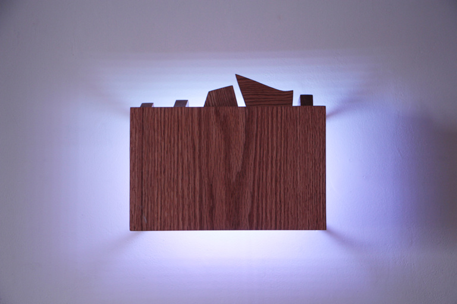
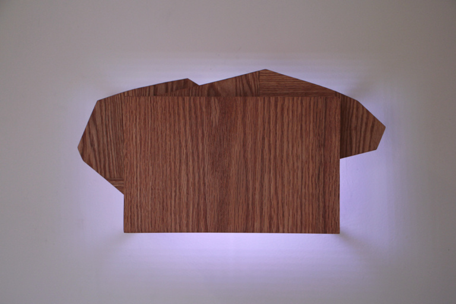

Each box is record of a walk taken while wearing Memorandum for Walking (chroma), a boot with an attached sensor which records the color of the ground below. The color illuminating the wall from the box is the recorded data of the colorspace of each place, with each playing back in real-time and smoothly changing from hue to the next.
lighthouses
spring
pier
breakwater
Poet David Hutcheson joined me on each walk, the Breakwater in Provincetown, MA, Pilgrim Spring in Truro, and the harbor pier in Provincetown. In addition to the sculptures, each of these walks is documented as a book. These books are a condensed documentation of the color data recorded from each walk, with poems written by David based on the collaborative experience of encountering each landscape. Each book is an Edition of 25. 180 pages.
gallery install